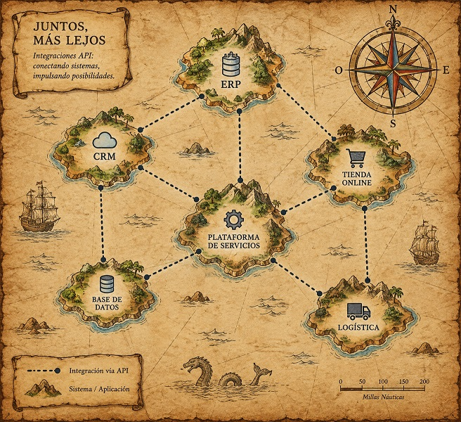

Integraciones
September 23, 2026 | ES Ver en LinkedIn
 Miguel García
Miguel García
Integraciones. Conectando islas mediante las API.
Si hay algo que me gusta de la programación, es interconectar diferentes sistemas o aplicaciones.
Valiosos por sí mismos, estos sistemas son como islas.
Tienen todo lo necesario para realizar correctamente su propósito: su propio ecosistema funcionando como un reloj.
Varias islas forman un archipiélago.
Un archipiélago es como el conjunto de aplicaciones que utiliza una empresa, pongamos por caso, un hotel.
En un hotel se utilizan muchas aplicaciones. Como las islas, cada una tiene su propio ecosistema y una función concreta.
Como las islas, están aisladas las unas de las otras. Juntas, pero no revueltas.
A menudo, precisamos combinar los datos que nos ofrece una, con los de otra. O con varias a la vez.
Muchas aplicaciones ofrecen métodos de exportación a Excel, CSV o PDF. Otras no, o los datos exportados son insuficientes u organizados de forma poco conveniente.
Ahí entra el trabajo manual y una buena dosis de paciencia: elaborar un informe en Excel, combinando datos de diversas fuentes es, de todo, menos agradable.
Y el resultado, efímero: ya tenemos el informe de esta semana. En breve, a ponernos con el de la siguiente.
El día de la marmota.
Sin embargo, muchas de estas aplicaciones ofrecen una API.
Una API (Application Programming Interface), permite realizar consultas sobre los datos de la aplicación.
Por tanto, si dos o más aplicaciones disponen de una API, podemos conectarlas.
De esta forma, podemos enviar datos de una aplicación a otra, extraer datos de ambas y combinarlos... las posibilidades son numerosas.
Entonces, las islas que forman el archipiélago, ya no son lugares remotos aislados, si no espacios interconectados.
Y ya se sabe que la unión hace la fuerza.
Hay islas que se conectan con una o varias de ellas. Alguna que otra sigue siendo un lugar inaccesible desde las demás, pero son las menos.
Interconectamos el ERP con el PMS, el POS y el CRM. Enriquecemos los datos de los clientes, mejoramos el conocimiento que tenemos de ellos, para ofrecer un servicio más cercano y personalizado.
Conectamos la app de huéspedes con el CRM, ofertamos al cliente servicios que sabemos son de su preferencia.
Enviamos desde la aplicación de mantenimiento un aviso a la de Guext Experience: el cliente tiene el aire acondicionado averiado, hay que compensarlo de alguna forma y hacerle saber que estamos en ello.
Hay que fusionar y pintar en un dashboard datos procedentes de chorrocientas fuentes. Para eso están las integraciones.
He realizado muchas integraciones entre diferentes sistemas: PMS, CRM, POS, ERP, domótica, IPTV, cerraduras, propios y ajenos... cada uno con su API y sus particularidades.
Ayer, sin ir más lejos, he dejado lista una integración con una aplicación de recursos humanos.
Interconectar sistemas, para mí, es uno de los trabajos más gratificantes que hago.
Y, afortunadamente, lo hago muy a menudo.

Créditos imagen: ChatGPT y los desvaríos de quien esto ha escrito.